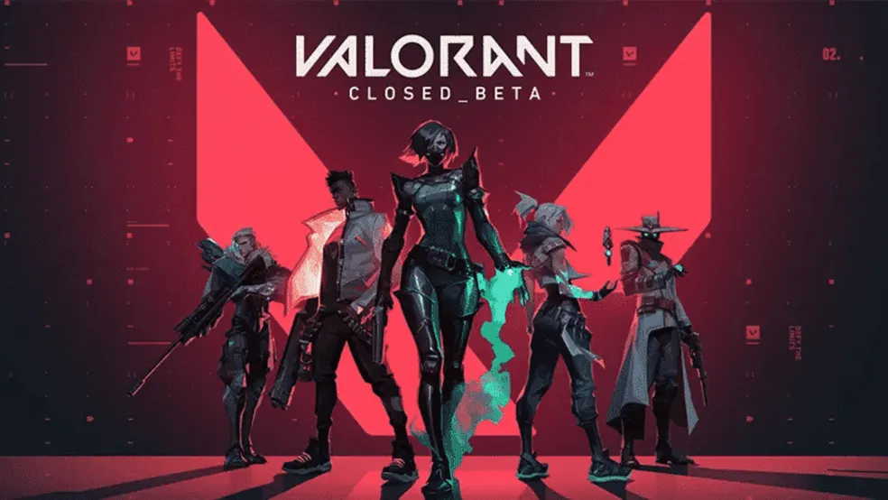

Minecraft é um jogo de construção, aventura e sobrevivência do gênero sandbox. Ele foi lançado oficialmente em 2011 pela Mojang Studios. Em games estilo sandbox, os players possuem liberdade para explorar e experimentar tudo ao seu redor, sem muitas restrições e objetivos definidos.
Elden Ring é um RPG de fantasia com exploração de mundo aberto e visão em terceira pessoa. O jogo foi desenvolvido pela FromSoftware e publicado pela Bandai em 2022. O time de produção contou com contribuições criativas de George R. R. Martin, criador do universo de Game of Thrones.

Valorant é um FPS tático online que mistura uso de armas e habilidades especiais. Cada personagem tem seu próprio kit de skills. O jogo é bem parecido com Counter-Strike. Dentro de um mapa, dois times de cinco integrantes cada precisam alternar entre ataque e defesa.